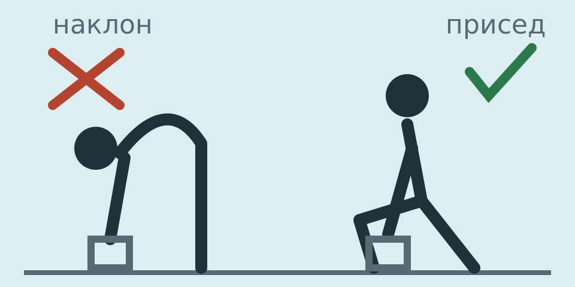

Интерактивное видео к каждому занятию: фигура показывает движение по трём кадрам из программы, отсчитывает удержание и повторы. Укреплять разгибатели спины, избегать сгибания и скручивания позвоночника. Программу стоит показать врачу ЛФК или реабилитологу перед стартом.
Сначала к врачу, если
онемение, слабость или «ватность» в ногах;
опоясывающая боль вокруг груди, проблемы с мочеиспусканием;
боль усиливается в покое или ночью, растёт с каждой неделей.
Переломы травматические (рукопашный бой). Денситометрию (DXA) стоит обсудить с врачом, только если какой-то из переломов случился от несильного удара или падения.
1
5держите
0:00 / 0:00
Дозировка: После кадра 3 — плавно вернуться в положение 1.
Подход завершён. Было ли больно во время упражнения?
Что исключить и что заменить

Поднимайте предметы через присед, держа их близко к телу. Наклон с круглой спиной давит на передний край позвонков — именно там ломаются клиновидные позвонки.
Исключить
скручивания на пресс, подъёмы корпуса;
наклоны вперёд к ногам, растяжка с круглой спиной;
резкие повороты корпуса, скрутки в йоге;
прыжки и игровые виды: баскетбол, волейбол;
брасс с поднятой над водой головой.
Можно
плавание на спине и кролем, лицо в воде (как советовал врач);
быстрая ходьба — верхний предел ударной нагрузки при переломах позвонков;